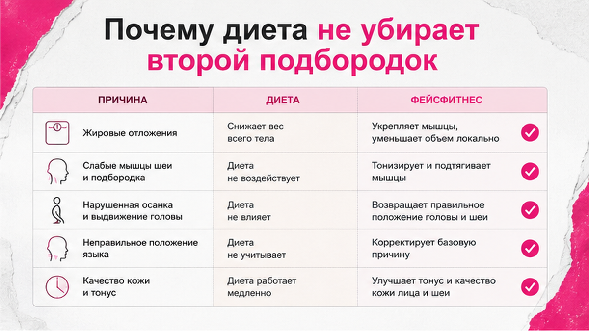
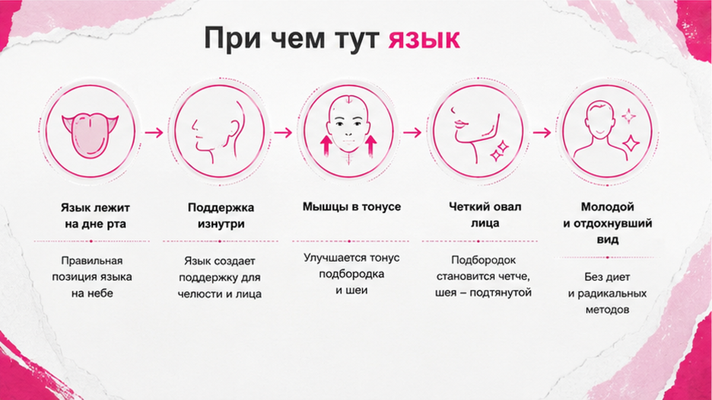
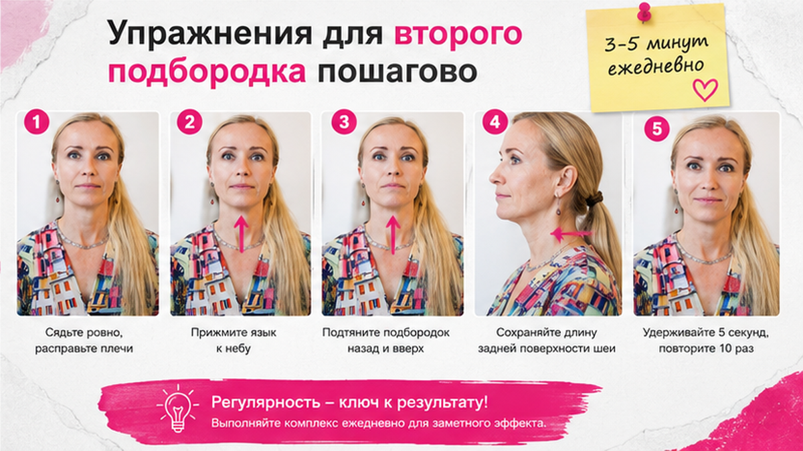

Второй подбородок редко уходит только от диеты: если причина в положении языка, осанке, застое лимфы или хроническом напряжении челюсти, вес может снизиться, а контур под подбородком - нет. Сначала проверьте, не сжаты ли зубы и не уехала ли голова вперёд. Потом - мягкие упражнения дома, 10-15 минут через день.
Ко мне часто приходят с одной фразой.
«Я похудела на восемь килограмм. Почему второй подбородок остался?»
Или наоборот.
«Вес тот же. Но в зеркале будто появилась лишняя складка под подбородком».
Обе истории - про одно и то же.
Мы привыкли думать, что второй подбородок - это только лишний жир.
Иногда так и есть.
Но гораздо чаще в моей практике я вижу другую картину.
Женщина ест нормально.
Диета соблюдается.
А овал всё равно «течёт» вниз.
Потому что лицо и шея живут не отдельно от тела.
И язык - не просто орган для вкуса и речи.
Он буквально держит или не держит нижнюю треть лица.
Сейчас разложу по полочкам - без стыда, без запугивания, без обещаний «минус подбородок за неделю».

Когда мы худеем, жир действительно уходит с тела.
Но лицо реагирует не всегда симметрично.
У одной женщины щёки становятся суше, а подбородок - мягче и заметнее.
У другой - овал наоборот собирается.
Разница не в силе воли.
Разница в том, что происходит с тканями, мышцами и положением головы.
Есть несколько причин, почему диета «не дотягивает» до зоны под подбородком.
Первая. Подкожная жир может уходить медленнее именно в нижней части лица и шеи.
Это нормальная физиология, не «что-то не так с вами».
Вторая. При дефиците калорий кожа иногда становится тоньше и менее упругой.
И тогда складка визуально выражается сильнее - хотя жира стало меньше.
Третья. Лимфа - внутренняя система, которая помогает тканям избавляться от лишней жидкости.
Если она застаивается, подбородок выглядит тяжелее даже при стабильном весе.
Утренний отёк, уставшее лицо к вечеру, ощущение «опухшости» - частые сигналы.
Четвёртая. Осанка.
Голова уезжает вперёд, шея укорачивается, платизма - широкая мышца на передней поверхности шеи - визуально опускает овал.
Диета тут бессильна.
Нужна работа с положением тела.
Пятая. Хроническое напряжение челюсти.
Зубы сжаты днём и ночью, язык прижат к нижней челюсти, жевательные мышцы не отдыхают.
Организм привыкает к этому состоянию.
И нижняя треть лица постепенно меняет форму.
Я не против здорового питания.
Я за то, чтобы не ждать от диеты того, что она не может сделать.
Если вы уже проходили через разочарование «похудела - лицо не изменилось», посмотрите материал про фейсбилдинг и фейс-йогу - там я объясняла, почему одни и те же упражнения у разных женщин дают разный результат.
И ещё один частый сценарий.
Женщина сидит на дефиците калорий, спит мало, стресс высокий.
Лицо выглядит уставшим, подбородок - заметнее.
Она думает: «Нужна ещё более жёсткая диета».
А организму нужен сон, дыхание и меньше зажима в челюсти.
Смотри.
Именно этот момент обычно упускают.

Несколько лет назад в интернете появилось много роликов про «правильное положение языка».
Кто-то обещал идеальную линию подбородка.
Кто-то пугал, что «вы всё делали неправильно».
Я смотрю на это спокойно.
Язык действительно важен.
Но это не волшебный рычаг и не замена врачу, если есть серьёзные нарушения прикуса или дыхания.
Если по-простому: язык может быть опорой на нёбо, а может «лежать внизу» и давить на нижнюю челюсть.
Когда язык постоянно внизу, подбородок и область под ним получают лишнее давление.
Когда язык мягко поднят к нёбу - без напряжения, без «проталкивания» - меняется тонус мышц дна рта.
Это не видно в зеркале сразу.
Но ощущается.
Челюсть становится тяжелее к вечеру, если язык весь день «висит».
Ещё один момент, который редко связывают с подбородком.
Дыхание через рот.
Когда мы дышим ртом - ночью или при стрессе - язык реже держит правильную опору.
Шея и голова постепенно смещаются.
И второй подбородок может усиливаться не от жира, а от положения.
Проверка на 30 секунд.
Сядьте ровно.
Закройте губы мягко.
Носовое дыхание.
Кончик языка - у задних зубов, средняя часть - к нёбу, без давления «изо всех сил».
Если через полминуты хочется сжать зубы или напрячь подбородок - значит, привычка другая, и её нужно менять постепенно.
Не через силу.
Через короткие напоминания в течение дня.
Компьютер, телефон, вождение - вот где язык чаще всего «падает».
Хотя нет… наверное, точнее будет сказать так: язык «падает» не потому что вы ленивы.
А потому что мозг экономит энергию и возвращается к старой привычке.
Поэтому я советую не ругать себя.
А ставить маленькие якоря.
Каждый раз, когда наливаете чай.
Каждый раз, когда садитесь в машину.
Три секунды - язык к нёбу, зубы расслаблены.
Это работает лучше, чем час упражнений раз в неделю.
Я не продаю вам метод с громким названием.
Я просто вижу в кабинете и на консультациях одну закономерность.
Женщины, которые мягко вернули опору языка и осанку, чаще говорят: «Лицо стало легче, даже если вес не изменился».
Это изменения в лучшую сторону - без гонки за идеалом.

Ниже - три мягких блока, которые я обычно даю дома.
Не все сразу в один день.
Начните с одного, через неделю добавьте второй.
Если есть боль в челюсти, щелчки, онемение - сначала врач, потом практика.
Блок 1. Опора языка (2-3 минуты)
Шаг 1. Губы сомкнуты без силы. Дышите носом.
Шаг 2. Кончик языка - за верхними зубами, к нёбу.
Шаг 3. Зубы не сжимайте. Подборodok расслаблен.
Шаг 4. Держите 20-30 секунд, отдышитесь. Повторите 5 раз.
Шаг 5. В течение дня ловите себя: язык снова «упал»? Мягко верните.
Блок 2. Мягкий подбородочный tuck (подтягивание подбородка к шее)
Шаг 1. Сядьте или встаньте ровно, плечи опущены.
Шаг 2. Взгляд вперёд. Не опускайте подбородок на грудь резко.
Шаг 3. Медленно сдвиньте голову назад - как будто вытягиваете затылок вверх, подбородок - слегка назад.
Шаг 4. Удержите 3 секунды. Выдох. Повторите 5-7 раз.
Шаг 5. Не делайте резких движений. Без боли в шее.
Блок 3. «Ковш» для овала (если нет спазма челюсти)
Если челюсть не зажата, добавьте упражнение «Ковш» из отдельного материала - 5-7 повторов, через день.
Если зубы сжаты - сначала расслабление жевательных, «Ковш» позже.
На сухой коже шеи - капля крема для скольжения пальцев при самопроверке.
Крем под запрос кожи подберите через диагностику - на стянутой коже массаж без ухода даёт микротравмы вместо свежести.
Реалистичный срок: ощущение легче в лице - иногда через 10-14 дней. Визуальный сдвиг контура - чаще 3-4 недели при работе с осанкой и языком вместе.
Миниплан на 14 дней.
Дни 1-14: блок 1 (язык) каждый день утром.
Дни 3-14: блок 2 (tuck) через день, 5-7 повторов.
Дни 7-14: «Ковш» только если челюсть расслаблена.
Каждый день: телефон на уровне глаз, одно фото профиля в одинаковом свете в день 1 и 14.
Не добавляйте всё в первый вечер.
Лицо любит последовательность, а не шок.
Техники простые.
Ошибки - тоже.
| Ошибка | Что происходит | Как исправить |
|---|---|---|
| Ждать только от диеты | Вес уходит, овал не меняется | Добавить осанку, язык, лимфу, мягкие упражнения |
| Давить язык «изо всех сил» | Напряжение в челюсти, головная боль | Мягкая опора, короткие подходы |
| 20-30 повторов tuck «для эффекта» | Боль в шее, спазм | 5-7 повторов, 1-2 раза в день |
| Игнорировать шею | Овал снова «плывёт» | 2 минуты на шею, материал про платизму |
| Сравнивать себя с фото «до/после» из рекламы | Разочарование, бросаете | Один ракурс, дневной свет, фото раз в 2 недели |
Сделайте: перед зеркалом один раз в неделю - профиль и фронт, без фильтров. Не делайте: агрессивный массаж под подбородком до синяков.
Косметика - часть системы, не волшебная отмена второго подбородка.
Один и тот же крем с индивидуальной активной фазой у одной женщины успокаивает стянутость, у другой - просто даёт скольжение для мягкой работы с шеей.
Разница в состоянии барьера кожи, а не в рекламном обещании.
Упражнения - только половина истории.
Вторая половина - то, что вы делаете между ними.
Именно здесь обычно «утекает» результат.
Телефон. Экран на уровне глаз, а не на коленях. Когда голова падает вниз часами, подбородок визуально утяжеляется уже к обеду.
Подушка. Спать на высокой подушке с согнутой шеей - не лучший друг овала. Попробуйте чуть более ровное положение, если просыпаетесь с отёком.
Стресс. Мы не замечаем, как сжимаем челюсть на совещаниях и в пробках. Раз в час - мягкий выдох, расслабить язык и зубы.
Вода и соль. Я не про «два литра или никак». Про то, что резкий скачок соли вечером часто даёт утренний отёк под подбородком.
Кофе и алкоголь. У одних это сразу видно на лице, у других - нет. Просто отметьте для себя связь, не из чувства вины.
Давай покажу на примере.
Одна ученица три недели делала только tuck и «Ковш».
Результат - слабый.
Мы добавили одну привычку: телефон на подставке на рабочем столе.
Через две недели она написала: «Не идеально, но к вечеру лицо не «плывёт» так сильно».
Вот что обычно и меняет картину.
Не новое волшебное упражнение.
А повторяющиеся мелочи.
Если утром вы просыпаетесь с тяжёлой челюстью - посмотрите, не сжимаете ли зубы во сне.
Иногда помогает простая капа у стоматолога, а не очередной ролик из интернета.
Я не обещаю, что второй подбородок исчезнет навсегда за месяц.
Но убрать ощущение «лица-маски», вернуть лёгкость в нижней трети - реально.
Без гонки, без стыда, без сравнения с чужими селфи.
Чем больше я работаю с лицами, тем яснее одна мысль.
Второй подбородок - это редко только «лишние килограммы».
Это язык, дыхание, осанка, лимфа, привычки.
И иногда - терпение.
Молодость - не идеальный угол на селфи.
Это когда утром вы не тянете кожу под подбородком руками, чтобы «собрать» лицо.
Если хотите почувствовать разницу уже сегодня, начните с пятиминутного расслабления лица - и только потом добавляйте tuck и «Ковш».
Лицо должно становиться легче, а не «работать на износ».
Если причина в осанке, языке и застое лимфы - мягкие упражнения часто дают заметные изменения в лучшую сторону. Если причина в выраженном жировом объёме или анатомии - упражнения дополняют, но не заменяют комплексный подход.
Нужна, если есть лишний вес и это рекомендация вашего врача. Но не ждите, что одна диета перерисует овал без работы с шеей и привычками.
10-15 минут плюс короткие напоминания про язык и осанку в течение дня. Раз в неделю по часу эффекта не даст.
Ощущение легче - 1-2 недели. Визуальный сдвиг - 3-4 недели при регулярности. Глубокие изменения - дольше.
Мягкая опора без силы - обычно комфортна. Боль, головокружение, онемение - стоп, к врачу.
Иногда да - дыхание через рот и положение языка связаны. При храпе и остановках дыхания во сне нужен очный осмотр, не только упражнения.
Да, мягко и без боли. Важнее регулярность, чем возраст.
Если после прочтения остался один главный вопрос - «с чего начать сегодня» - начните с языка на нёбе на 30 секунд и проверки, куда уехала голова над телефоном.
Этого достаточно для первого дня.
Да, если нет спазма челюсти. «Ковш» - из отдельного материала, 5-7 повторов через день, не в один день с агрессивным tuck.
Только мягкий, без синяков. Если кожа сухая - сначала крем для скольжения. Агрессивный массаж при застое лимфы может дать обратный отёк.
Достоверность: материал основан на практике Елены Шимановской в фейс-йоге. Не медицинская рекомендация. При боли в челюсти, нарушении прикуса, онемении - сначала очный осмотр.